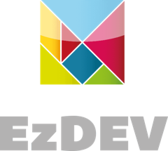
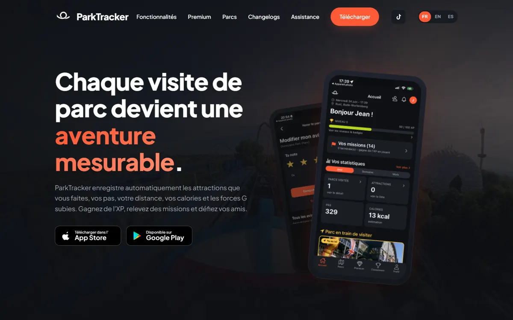
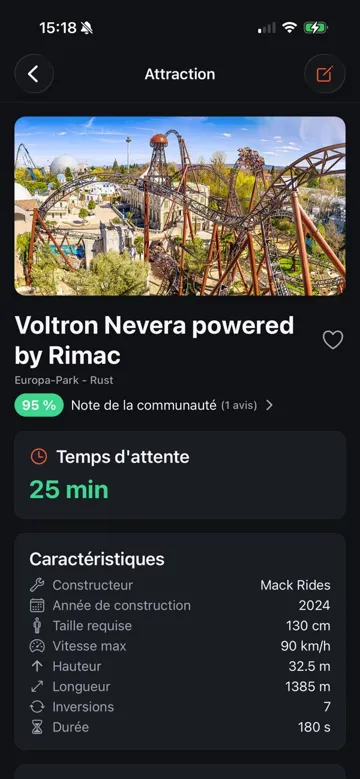
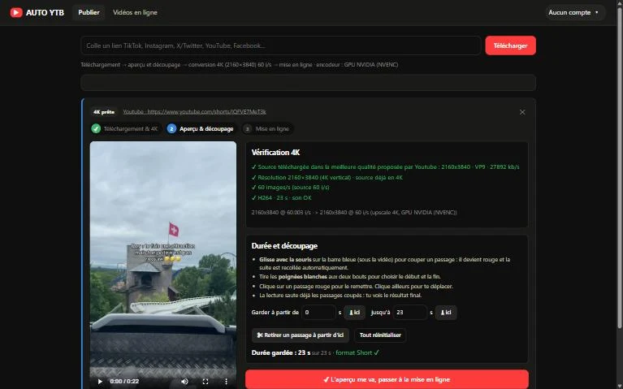
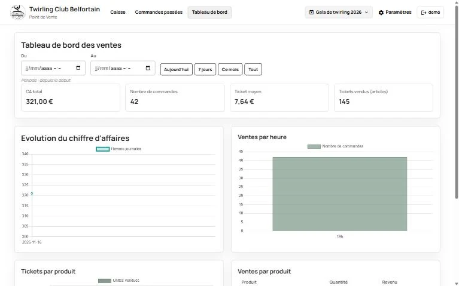
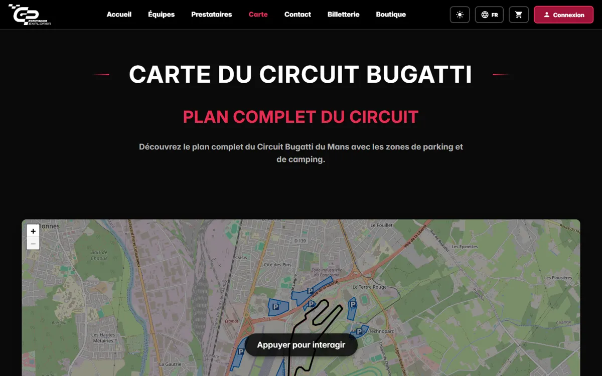
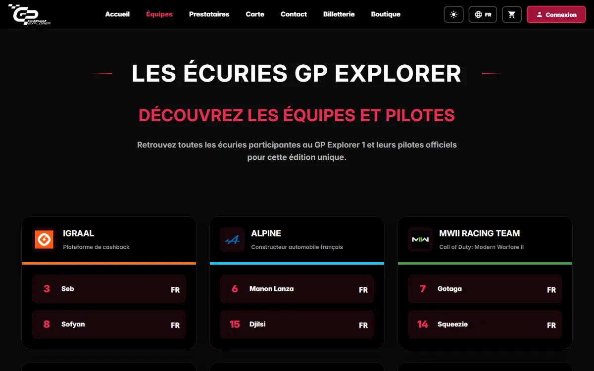
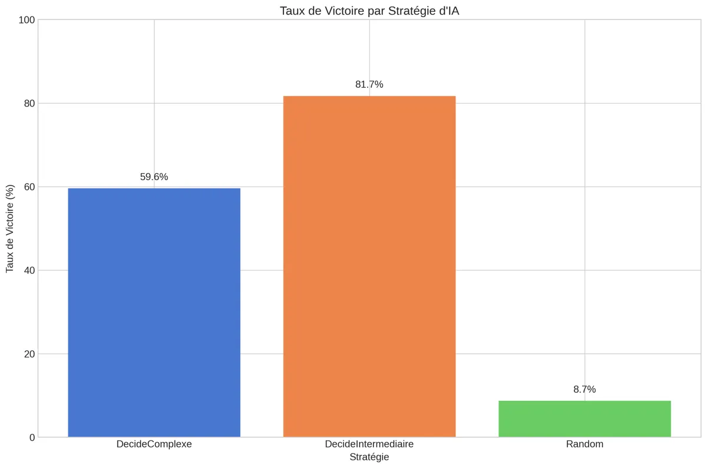
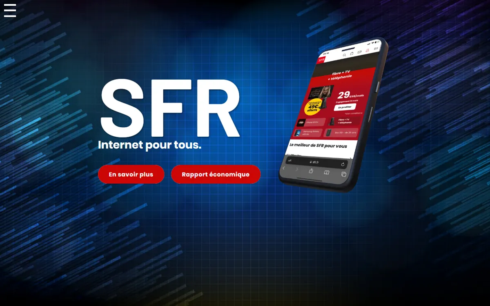
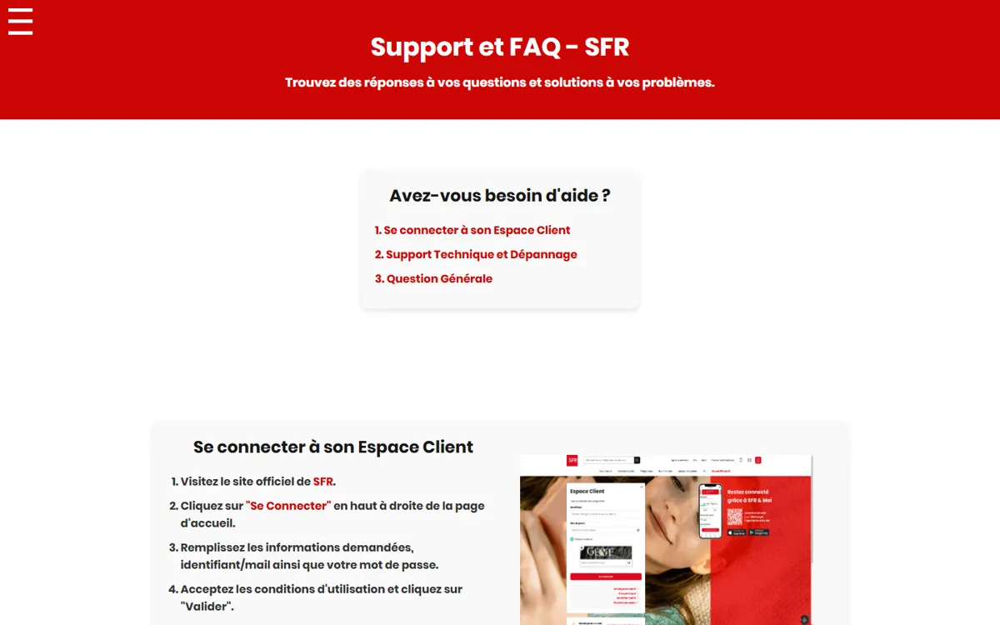

Glisse pour tourner · molette pour zoomer · clique sur les objets
Baptiste DIDIER
Étudiant en 3e année de BUT Informatique Stage chez Actemium à partir de janvier 2027
Je m'appelle Baptiste Didier et je suis actuellement étudiant en troisième année de BUT Informatique à l'IUT Nord Franche-Comté, dans le parcours Réalisation d'applications : conception, développement et validation.
Passionné par l'informatique depuis le collège, je m'intéresse particulièrement au développement logiciel, à la conception d'applications et aux nouvelles solutions technologiques. Au fil de ma formation et de mes projets personnels et universitaires, j'ai pu développer mes compétences dans plusieurs langages et environnements de développement.
J'ai également eu l'occasion de mettre mes connaissances en pratique lors de projets en équipe et de mon stage chez EzDEV, où j'ai travaillé sur la modernisation d'outils de développement Python et l'automatisation de tests.
Curieux, rigoureux et motivé, j'aime apprendre, relever de nouveaux défis techniques et découvrir de nouvelles technologies. Je réalise également une veille informatique régulière afin de rester informé des évolutions du secteur.
En bref
Localisation
Vézelois, Territoire de Belfort (90)
Mobilité
Permis B, véhiculé
Langues
Français, anglais (B1)
Formation
BUT Informatique, IUT Nord Franche-Comté · 3e année
Expériences
Stage chez EzDEV (avril – juin 2026) · stage chez Actemium dès janvier 2027
Loisirs
Football en club depuis 14 ans, jeux vidéo de gestion et de stratégie
Mes stages, mon application publiée sur les stores et mes projets les plus aboutis, réalisés à l'IUT ou sur mon temps libre. Choisis une catégorie, puis ouvre un projet pour voir son contexte, ses fonctionnalités, mon rôle et les difficultés rencontrées.
stage-actemium à venir
Actemium : automatiser les tâches de l'entreprise
À partir de janvier 2027 · Stage de 3e année · Actemium
Pour mon stage de 3e année, je rejoins Actemium. Le sujet : automatiser des tâches de l'entreprise avec Power Apps et travailler avec des agents conçus dans Copilot Studio.
Ce qui m'attend
Power Apps : créer des applications qui automatisent des tâches du quotidien
Copilot Studio : travailler avec des agents pour assister les équipes
Power Apps
Copilot Studio
Automatisation
Le stage commence en janvier 2027 : cette fiche sera complétée au fil de la mission.
stage-ezdev stage

EzDEV : moderniser une application de gestion documentaire
Avril – juin 2026 · Stage de 2e année · EzDEV, Montreux-Château
EzDEV développe une application de gestion électronique de documents (GED). Ma mission : la faire passer de Python 3.11 à Python 3.13 sans rien casser, en modernisant les outils de développement Python et en automatisant les tests.
1. Auditdépendances et code incompatibles
2. Mesurecouverture des tests existants
3. Migrationadaptation du code à Python 3.13
4. Automatisationtests et rapports à chaque modification
Ma démarche, étape par étape
Ce que j'ai fait
Audit des dépendances et adaptation du code à la nouvelle version
Outils d'analyse du code (LibCST) et de la couverture des tests (coverage.py)
Automatisation des tests et des rapports dans la chaîne d'intégration GitLab
Le défi
Changer de version sans régression. Plutôt que de corriger au hasard, j'ai d'abord mesuré ce que les tests couvraient, puis automatisé leur lancement : chaque modification est vérifiée avant d'être livrée.
Ce que j'en retiens
Sur un code existant, on lit avant d'écrire, et on ne livre rien sans l'avoir testé.
Python
LibCST
pytest
coverage.py
GitLab CI/CD
Code privé, propriété de l'entreprise.
parktracker en ligne
ParkTracker : l'application des visiteurs de parcs
2026 · Projet personnel · application publiée sur l'App Store et Google Play
Une application mobile qui transforme chaque visite de parc d'attractions en aventure mesurable : elle détecte automatiquement les attractions faites grâce au GPS, compte les pas, la distance et même les forces G subies dans les loopings. Plus de 50 parcs sont reconnus, en Europe et aux États-Unis.

Le site vitrine parktracker.fr

Quelques écrans de l'application (captures de l'App Store)
Fonctionnalités principales
Suivi automatique des attractions, des pas, de la distance, des calories et des forces G
Temps d'attente en direct, courbes d'attente et prévision pour le reste de la journée
XP, missions et badges, et un classement entre amis
Avis et photos sur les parcs et les attractions, et un récap annuel façon « Wrapped »
Abonnement Premium : prédictions d'affluence et alertes quand une file devient courte
Traduite en cinq langues, avec un mode hors-ligne
Mon rôle
Je porte le projet de bout en bout : l'application, le site vitrine, la publication sur les deux stores et les mises à jour, publiées dans un journal des nouveautés.
Le défi
Compter une attraction sans que l'utilisateur touche à son téléphone, même application fermée : l'app s'appuie sur la position et sur le temps passé dans la zone de l'attraction. Autre défi : prévoir l'attente de la journée à partir de la fréquentation réelle du parc.
Évolutions
De nouveaux parcs ajoutés régulièrement, et des améliorations à chaque version (1.0.4 → 1.0.8) selon les retours des utilisateurs.
Un éditeur vidéo qui tourne entièrement sur la machine, dans le navigateur : import instantané, masques de flou, aperçu en temps réel et export 4K à 60 i/s. Aucun compte, aucun envoi de fichier, et seulement ~250 Ko de code, sans Electron ni dépendance npm.
L'éditeur : médias, aperçu, inspecteur et timeline
Fonctionnalités principales
Montage multipiste : vidéo, son, textes stylés, masques, transitions et outils de découpe
Import de fichiers ou par lien (TikTok, Instagram, YouTube) grâce à yt-dlp
Aperçu et export avec exactement les mêmes shaders : ce qu'on voit est ce qui sort
Installation en un seul fichier sous Windows, script pour Linux, et une page d'autotest
Sous le capot
Effets en WebGL2, décodage et encodage sur la carte graphique avec WebCodecs (NVENC, Quick Sync), et un petit serveur Node.js pour les fenêtres de fichiers, les téléchargements et l'assemblage MP4 : environ 17 000 lignes de JavaScript.
Le défi
Rendre un rush 4K 60 fluide. En repensant le décodage (un décodeur par vidéo, le plan suivant préparé une seconde à l'avance, le son lu sans décoder l'image), la lecture est passée d'environ 10 à 178 images par seconde, et poser un clip sur la timeline de 300 ms à 25 ms.
Avr. – nov. 2026 · Projet personnel · site de créateur de contenu
Le site officiel de Clip2EP, mon compte de vidéos sur les parcs d'attractions : 174 400 abonnés sur TikTok et 52 100 sur YouTube. Il sert de media kit aux marques et aux parcs : présentation, audience, partenariats, vidéos et contact.
L'accueil : un parc en 3D où chaque attraction ouvre une section
Les statistiques d'audienceMes vidéos, rangées par parc
Fonctionnalités principales
Parc 3D interactif (Three.js), avec un plan 2D de secours si la 3D n'est pas disponible
Statistiques d'audience TikTok et YouTube : vues, abonnés, âge, genre et pays
Toutes mes vidéos, rangées par parc, et les partenariats
Site multilingue, thème clair et sombre
Sous le capot
Chaque nuit, une GitHub Action lance un script Python (yt-dlp et API YouTube) qui met à jour les chiffres et garde une copie des vignettes, dont les adresses d'origine expirent. Elle vérifie le fichier avant de l'enregistrer, pour ne jamais publier de statistiques vides.
Sept. – oct. 2026 · Projet personnel · automatisation
Un outil local qui récupère une vidéo TikTok, Instagram, X ou YouTube, la convertit en 4K verticale à 60 i/s, puis la publie sur mes chaînes YouTube avec son titre, sa description, ses hashtags et une date de programmation.

Étape 2 : vérification 4K, aperçu et découpage
Fonctionnalités principales
Publication en trois étapes : téléchargement et conversion 4K, aperçu avec découpage à la souris, mise en ligne
Titre lu à l'écran par l'OCR de Windows, description et hashtags repris de la vidéo d'origine
Vérifications façon YouTube Studio : qualité, format Short, filigrane, risque de contenu réutilisé
Plusieurs chaînes, et pour chaque vidéo en ligne : programmation, modification et statistiques détaillées
Sous le capot
Un serveur FastAPI relié aux API YouTube Data et YouTube Analytics (connexion OAuth 2.0 avec PKCE), yt-dlp et ffmpeg pour la vidéo (encodage sur la carte graphique), SQLite pour l'historique : environ 4 000 lignes.
Sécurité
Le serveur n'écoute que sur l'ordinateur, les jetons Google sont chiffrés, et l'interface est protégée contre les sites malveillants (anti-CSRF, anti-DNS-rebinding, CSP stricte). Les accès ne sont jamais versionnés.
Juin – juil. 2026 · Projet personnel · pour une association
Une application de caisse web pour les événements du club : produits, stocks, ventes, statistiques et impression automatique des tickets sur une imprimante thermique, sans fenêtre d'impression.
La caisse et le panier

Le tableau de bord (données de démonstration)
Fonctionnalités principales
Comptes administrateur et caissier, chaque administrateur ayant sa propre boutique
Événements séparés, chacun avec ses produits, ses stocks, ses ventes et son logo sur le ticket
Caisse avec panier, monnaie à rendre, et un ticket pour tout ou un ticket par article
Impression directe en ESC/POS, logo converti pour l'imprimante, suivi du statut de chaque ticket
Tableau de bord : chiffre d'affaires, ticket moyen, ventes par heure et par produit, historique
Sous le capot
Interface Vue 3 (Vuetify, Pinia, Chart.js) et API FastAPI avec SQLAlchemy, sur SQLite ou PostgreSQL. Mots de passe hachés (PBKDF2), sessions par jetons signés, données validées avec Pydantic et CORS restreint.
Topaz Local : améliorer ses vidéos par IA, en local
Sept. 2026 · Projet personnel
Un équivalent libre de Topaz Video AI : super-résolution, débruitage, netteté et interpolation d'images pour un mouvement fluide, calculés sur la carte graphique. L'interface web affiche la progression, le temps restant et un comparateur avant / après.
Choix de la vidéo et réglages
Fonctionnalités principales
Mode automatique : modèle d'IA choisi selon la résolution d'origine, vidéo portée à au moins 60 i/s, sortie jusqu'en 4K
Réglages manuels : modèle, résolution et fps cibles, netteté, bruit, encodeur et qualité
Installation automatique des moteurs (ffmpeg, Real-ESRGAN, RIFE), sous Windows et Linux
Sous le capot
Une chaîne de traitement en Python : analyse avec ffprobe, extraction des images, Real-ESRGAN pour reconstruire les détails, RIFE pour créer les images intermédiaires (tous deux en Vulkan), puis ré-encodage avec NVENC ou libx264.
Sept. 2025 – mars 2026 · Projet de 2e année (SAÉ S3-S4) · équipe de 5
Le site complet d'un grand événement de course au circuit Bugatti du Mans : billetterie, boutique, carte du circuit, prestataires… Chaque utilisateur a son propre espace selon son rôle (visiteur, prestataire, administrateur). Projet mené en méthode agile, par itérations courtes, à partir d'un cahier des charges.
La page d'accueil, avec la vidéo du circuit en fond
La billetterie

La carte interactive du circuit

Les écuries et leurs pilotesLe tableau de bord des statistiques (rapport)
Fonctionnalités principales
Billetterie par expérience (pass festival, karting, simulateurs, concerts…), boutique et panier
Carte interactive du circuit avec ses parkings et son camping (Leaflet)
Espace administrateur : services, boutique, utilisateurs, messages, carte et contenu de l'accueil
Espace prestataire : ses produits, son compte et ses statistiques de ventes
Tableaux de bord (Chart.js) et QR codes générés et lus dans le navigateur
Connexion par identifiant ou compte Discord, site traduit en trois langues (FR, EN, ES)
Sous le capot
Une API Express de 74 routes documentée avec Swagger, 16 modèles de données Sequelize sur PostgreSQL, et des droits vérifiés côté serveur (jetons JWT, rôles, propriété des données). Le site est une application Vue 3 avec Pinia et Vue Router.
Le défi
Avancer à cinq sur le même code pendant plusieurs mois : découper le travail en itérations courtes et se répartir les tâches pour ne pas se marcher dessus.
Évolutions possibles
Mettre le site en ligne avec une base hébergée, et ajouter des tests automatisés sur l'API.
Avril – juin 2025 · Projet de 1re année · équipe de 5 · chef d'équipe
Un puissance 4 où l'on choisit la taille de la grille (de 5 à 10 colonnes et lignes) et le nombre de pions à aligner, avec la possibilité d'affronter l'ordinateur. On joue au clavier, dans la console.
Extrait du rapport technique : l'IA choisit où jouer
Fonctionnalités principales
Grille et règle de victoire paramétrables avant chaque partie
Deux intelligences artificielles : l'une suit des règles (gagner, bloquer, jouer au centre), l'autre note chaque coup possible
Parties rejouables depuis des fichiers d'entrée, pour tester des scénarios précis
Sous le capot
Le jeu s'appuie sur boardifier, un framework MVC fourni par l'IUT. 85 tests unitaires JUnit 5 couvrent le modèle et l'affichage.
Mon rôle
Chef d'équipe : répartition des tâches, suivi de l'avancement et coordination des cinq membres.
Le défi
Savoir quelle IA est vraiment la meilleure. Un banc d'essai les fait s'affronter sur des tournois de 1 000 parties : l'IA intermédiaire bat l'IA à règles dans 68 % des cas.

Taux de victoire de chaque stratégie, mesuré par le banc d'essai
Un jeu de tir à la première personne : le joueur doit éliminer des vagues de zombies de plus en plus difficiles pour passer à la manche suivante.
En jeu : manche, zombies restants, barre de vie et mini-carte
Fonctionnalités principales
Système de manches avec une difficulté progressive et un zombie boss
Interface complète : menu, configuration de partie, paramètres, pause et écran de résultats
Touches personnalisables grâce au nouveau système de contrôles d'Unity
Mini-carte, viseur, barre de vie et compteur de zombies tués
Sous le capot
20 scripts C# (environ 2 300 lignes) répartis sur 5 scènes : joueur et tir, gestionnaire de vagues, mini-carte, pause, menus et statistiques de partie.
Le défi
Faire monter la difficulté sans rendre le jeu injouable : le gestionnaire de vagues règle le nombre et le type de zombies à chaque manche.
Déc. 2024 – janv. 2025 · Projet de 1re année (SAÉ 1.01-02) · en binôme
Un programme Java qui modifie des fichiers audio : changer la hauteur d'une voix sans changer sa durée, accélérer ou ralentir un son sans le déformer, ajouter de l'écho.
Formes d'onde des fichiers du dépôt, pour un facteur 1,5
Fonctionnalités principales
Rééchantillonnage pour changer la hauteur du son
Trois vocodeurs de plus en plus fins : simple, avec chevauchement, puis avec recherche de corrélation croisée
Écho et affichage de la forme d'onde
Sous le capot
Pour un facteur 1,5, le son est d'abord rééchantillonné : plus aigu, mais plus court (9,6 s → 6,4 s). Le vocodeur l'étire ensuite pour retrouver sa durée d'origine. Chaque étape produit son propre fichier .wav, pratique pour comparer.
Le défi
Éviter les « clics » quand on recolle des morceaux de son : on cherche le meilleur point de raccord grâce à la corrélation croisée entre deux morceaux.
2024 – 2025 · Projet de 1re année (SAÉ 1.05-06) · équipe de 4
Un site de présentation d'une entreprise : son histoire, ses actualités, sa situation économique et un support FAQ. Il est validé avec les outils du W3C et publié sur GitHub Pages, GitLab Pages et Bitbucket.

La page d'accueil (réalisée par moi)

La page Support et FAQ (réalisée par moi)
Mon rôle
La page d'accueil, la barre de navigation, le pied de page, la FAQ et la page 404, ainsi que le planning du projet (diagramme de Gantt).
Les langages, frameworks et outils que j'utilise, avec les projets où je les ai mis en pratique.
Langages 9
JavaPuissanceX · Pauvocodeur
PythonStage EzDev · projets IUT
JavaScriptGP Explorer
HTML
CSS
C
C#
Kotlin
Swift
Frameworks 5
FXJavaFX
FlaskProjets IUT
Vue.jsGP Explorer
Node.jsGP Explorer · Express
Qt
Bases de données 3
MySQLProjets IUT
PostgreSQLGP Explorer
MCDMeriseMCD / MLD
Qualité et tests 4
pytestStage EzDev
%coverage.pyStage EzDev
CSTLibCSTStage EzDev
CI/CD GitLabStage EzDev
Outils 12
Git
GitHub
GitLab
Bitbucket
IntelliJ IDEA
PyCharm
DataGrip
VS Code
Unity
Vim
Linux
Windows
Gestion de projet 6
Notion
Trello
Méthode agile
Analyse des besoins
Cahier des charges
Maintenance
Qualités personnelles
Travail en équipe
Organisation
Curiosité
Motivation
Coordination d'équipe
Parcours
Du bac à mon prochain stage, voici les grandes étapes de mon parcours, de la plus récente à la plus ancienne.
Janvier 2027Stage chez ActemiumJ'y automatiserai des tâches de l'entreprise avec Power Apps et travaillerai avec des agents conçus dans Copilot Studio.
Avril – juin 2026Stage de développeur chez EzDEVÀ Montreux-Château, j'ai fait passer une application de gestion documentaire de Python 3.11 à Python 3.13, en automatisant ses tests.
Juin – juillet 2025Job d'été chez AuchanÀ Bessoncourt, je m'occupais de la mise en rayon et du réapprovisionnement.
2024 → 2027BUT Informatique à l'IUT Nord Franche-ComtéÀ Belfort, dans le parcours Réalisation d'applications. J'ai validé ma 2e année et je suis aujourd'hui en 3e année.
2024Baccalauréat STI2DSpécialité Systèmes d'information et numérique, où j'ai acquis mes premières bases en programmation.
Veille informatique
Quatre sources que je consulte régulièrement pour rester à jour.
Stack Overflow : comprendre une erreur et retenir les bonnes pratiques
GitHub : lire le code d'autres projets et suivre les outils que j'utilise
Reddit : suivre l'actualité des langages et des frameworks
Discord : échanger avec d'autres développeurs
Contact
Merci de votre visite. Une question ou une proposition ? Écrivez-moi, je vous réponds rapidement.